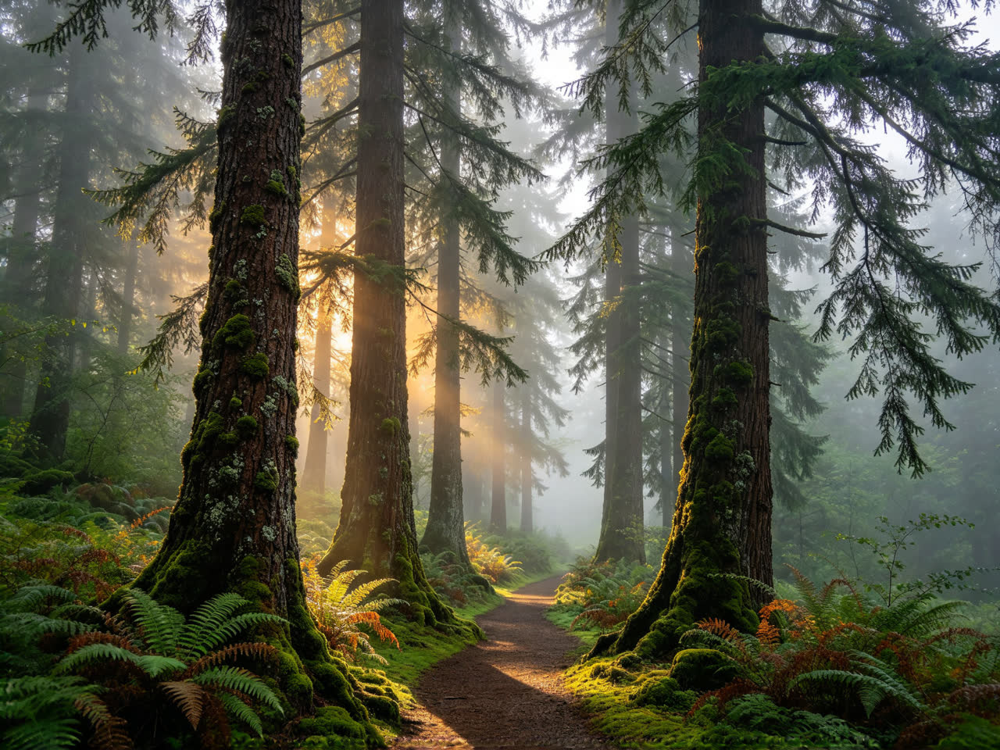

Living World · Procedural Scene
The grove breathes
The grove breathes
on its own.
No paths, no labels — just moss roots, drifting pollen, and fog moving slowly between the boughs. Move your pointer to lean into the scene.